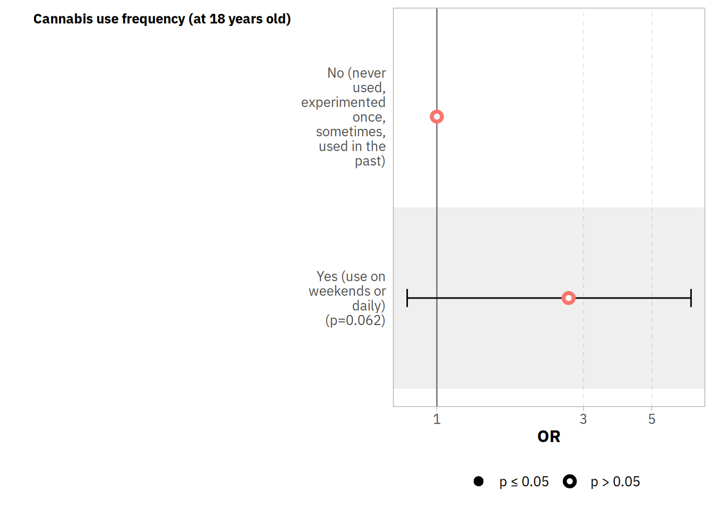

Is cannabis associated with bipolar disorder?
Bruno Braga Montezano ![]()
Methods
In order to summarize the exposure variables, we used a descriptive table with absolute and relative frequencies of the categorical variables and presented mean with standard deviations and median with minimum and maximum values for numeric variables. The bivariate analyses were performed with Student’s \(t\)-tests, \(\chi\)-squared tests, Fisher’s exact test and Mann-Whitney \(U\) tests depending on the variables distributions.
We built binomial logistic models to assess the effects for bipolar disorder incidence at 22 years old in the studied exposures, controlling for the other variables. Considering multicollinearity in regression analysis can be a problem since variables wouldn’t provide independent or unique information, we used variance inflation factor (VIF) to measure the correlations between the predictors in the model (Fox et al., 1992). We considered a VIF of 4 or greater as threshold to classify a predictor estimate as non-reliable.
All analyses were conducted through scripts written in the R programming language (version 4.3.1). Additional information on the present R session is available at the end of the page.
Results
How is the bipolar disorder (BD) outcome distributed?
Eighty-seven participants (2.3%) were diagnosed with bipolar disorder at follow-up, of which, 76 (2.04%) had a diagnosis for bipolar disorder type I and 11 (0.3%) for bipolar disorder type II.
Firstly, we’ll create the main descriptive table
For the \(p\)-values, chisq.test.no.correct was used for categorical variables with all expected cell counts \(\geq 5\), and fisher.test for categorical variables with any expected cell count \(< 5\).
| Characteristic | Overall, N = 3,7121 | No, N = 3,6251 | Yes, N = 871 | p-value2 |
|---|---|---|---|---|
| BD subtype | <0.001 | |||
| NOS | 68 (1.8%) | 68 (1.9%) | 0 (0%) | |
| Not BD | 3,557 (96%) | 3,557 (98%) | 0 (0%) | |
| Type 1 | 76 (2.0%) | 0 (0%) | 76 (87%) | |
| Type 2 | 11 (0.3%) | 0 (0%) | 11 (13%) | |
| Sex | 0.7 | |||
| Female | 1,968 (53%) | 1,920 (53%) | 48 (55%) | |
| Male | 1,744 (47%) | 1,705 (47%) | 39 (45%) | |
| Skin color | <0.001 | |||
| Non-white | 1,263 (36%) | 1,219 (36%) | 44 (54%) | |
| White | 2,219 (64%) | 2,181 (64%) | 38 (46%) | |
| Unknown | 230 | 225 | 5 | |
| Socioeconomic status at 18 years old (1: poorest; 5: wealthiest) | 0.022 | |||
| 1 | 671 (20%) | 645 (19%) | 26 (32%) | |
| 2 | 672 (20%) | 655 (20%) | 17 (21%) | |
| 3 | 685 (20%) | 668 (20%) | 17 (21%) | |
| 4 | 706 (21%) | 695 (21%) | 11 (14%) | |
| 5 | 703 (20%) | 693 (21%) | 10 (12%) | |
| Unknown | 275 | 269 | 6 | |
| Physical abuse by parents (at 11 years old) | 2,203 (63%) | 2,147 (63%) | 56 (68%) | 0.3 |
| Unknown | 229 | 224 | 5 | |
| Cannabis use (at 11 years old) | 7 (0.2%) | 6 (0.2%) | 1 (1.3%) | 0.15 |
| Unknown | 275 | 264 | 11 | |
| Cannabis use (at 15 years old) | 48 (1.4%) | 48 (1.5%) | 0 (0%) | 0.6 |
| Unknown | 377 | 367 | 10 | |
| Lifetime cannabis use (at 18 years old) | 715 (21%) | 690 (21%) | 25 (33%) | 0.014 |
| Unknown | 382 | 371 | 11 | |
| Cannabis use frequency (at 18 years old) | 0.014 | |||
| Never | 2,615 (79%) | 2,564 (79%) | 51 (67%) | |
| Experimented | 377 (11%) | 365 (11%) | 12 (16%) | |
| Used in the past | 158 (4.7%) | 150 (4.6%) | 8 (11%) | |
| Sometimes | 110 (3.3%) | 109 (3.3%) | 1 (1.3%) | |
| Weekends | 17 (0.5%) | 17 (0.5%) | 0 (0%) | |
| Daily | 53 (1.6%) | 49 (1.5%) | 4 (5.3%) | |
| Unknown | 382 | 371 | 11 | |
| Lifetime cocaine use (at 18 years old) | 318 (9.6%) | 305 (9.4%) | 13 (17%) | 0.027 |
| Unknown | 384 | 374 | 10 | |
| 1 n (%) | ||||
| 2 Fisher’s exact test; Pearson’s Chi-squared test | ||||
Missing data visualization

Are cannabis and cocaine use associated with bipolar disorder?
We fitted a logistic model (estimated using ML) to predict bipolar disorder with lifetime cannabis use at 18 years old (formula: \(BD\) ~ \(cannabis\)). The model’s explanatory power is very weak (Tjur’s \(R^2\) = 1.81e-03). The model’s intercept, corresponding to cannabis = No, is at -3.92 (95% CI [-4.21, -3.65], \(p\) < .001). The effect of cannabis use at 18 [Yes] is statistically significant and positive (\(\beta\) = 0.60, 95% CI [0.10, 1.08], \(p\) = 0.016; \(B\) = 0.60, 95% CI [0.10, 1.08]; OR = 1.82, 95% CI [1.10, 2.93]).
We also fitted a logistic model (estimated using ML) to predict bipolar disorder with lifetime cocaine use at 18 years old (formula: \(BD\) ~ \(cocaine\)). The model’s explanatory power is very weak (Tjur’s \(R^2\) = 1.47e-03). The model’s intercept, corresponding to cocaine = No, is at -3.83 (95% CI [-4.09, -3.59], \(p\) < .001). The effect of cocaine use at 18 [Yes] is statistically significant and positive (\(\beta\) = 0.67, 95% CI [0.02, 1.25], \(p\) = 0.030; \(B\) = 0.67, 95% CI [0.02, 1.25]; OR = 1.96, 95% CI [1.02, 3.49]).
These results are summarized in the tables below.
| Characteristic | OR1 | 95% CI1 | p-value |
|---|---|---|---|
| Lifetime cannabis use | |||
| No | — | — | |
| Yes | 1.82 | 1.10, 2.93 | 0.016 |
| 1 OR = Odds Ratio, CI = Confidence Interval | |||
| Characteristic | OR1 | 95% CI1 | p-value |
|---|---|---|---|
| Lifetime cocaine use | |||
| No | — | — | |
| Yes | 1.96 | 1.02, 3.49 | 0.030 |
| 1 OR = Odds Ratio, CI = Confidence Interval | |||
What about adjusted models for lifetime cannabis use at 18 years old?
Since the crude (non-adjusted) model was significant, we may follow it up with an adjusted analysis. The results below are the adjusted model for sex, skin color, and socioeconomic status (asset index quintiles).
| Characteristic | OR1 | 95% CI1 | p-value |
|---|---|---|---|
| Lifetime cannabis use | |||
| No | — | — | |
| Yes | 1.92 | 1.16, 3.10 | 0.009 |
| Socioeconomic status | 0.79 | 0.66, 0.94 | 0.009 |
| Sex | |||
| Female | — | — | |
| Male | 0.86 | 0.53, 1.37 | 0.5 |
| Skin color | |||
| Non-white | — | — | |
| White | 0.57 | 0.36, 0.91 | 0.020 |
| 1 OR = Odds Ratio, CI = Confidence Interval | |||
Then, we added physical abuse by parents and lifetime cocaine use as well in the previous model from the table above.
| Characteristic | OR1 | 95% CI1 | p-value |
|---|---|---|---|
| Lifetime cannabis use | |||
| No | — | — | |
| Yes | 2.00 | 1.20, 3.25 | 0.006 |
| Socioeconomic status | 0.81 | 0.68, 0.96 | 0.017 |
| Sex | |||
| Female | — | — | |
| Male | 0.88 | 0.55, 1.41 | 0.6 |
| Skin color | |||
| Non-white | — | — | |
| White | 0.60 | 0.37, 0.97 | 0.036 |
| Physical abuse by parents | |||
| No | — | — | |
| Yes | 1.15 | 0.71, 1.94 | 0.6 |
| 1 OR = Odds Ratio, CI = Confidence Interval | |||
Finally, we added lifetime cocaine use as well for the last adjusted model.
| Characteristic | OR1 | 95% CI1 | p-value |
|---|---|---|---|
| Lifetime cannabis use | |||
| No | — | — | |
| Yes | 1.79 | 0.95, 3.19 | 0.059 |
| Socioeconomic status | 0.81 | 0.68, 0.96 | 0.017 |
| Sex | |||
| Female | — | — | |
| Male | 0.87 | 0.54, 1.40 | 0.6 |
| Skin color | |||
| Non-white | — | — | |
| White | 0.60 | 0.37, 0.96 | 0.033 |
| Physical abuse by parents | |||
| No | — | — | |
| Yes | 1.16 | 0.71, 1.95 | 0.6 |
| Lifetime cocaine use | |||
| No | — | — | |
| Yes | 1.35 | 0.62, 2.86 | 0.4 |
| 1 OR = Odds Ratio, CI = Confidence Interval | |||
In conclusion, lifetime cannabis use just became not significant after the inclusion of lifetime cocaine use in the adjusted model.
Based on previous analyses, we considered to try an approach based on stratification by sex and parental spanking
First, the model stratified by sex. The models are presented in the tables below.
| Characteristic | OR1 | 95% CI1 | p-value |
|---|---|---|---|
| Lifetime cannabis use | |||
| No | — | — | |
| Yes | 1.99 | 0.95, 4.03 | 0.060 |
| 1 OR = Odds Ratio, CI = Confidence Interval | |||
| Characteristic | OR1 | 95% CI1 | p-value |
|---|---|---|---|
| Lifetime cannabis use | |||
| No | — | — | |
| Yes | 1.80 | 0.88, 3.44 | 0.088 |
| 1 OR = Odds Ratio, CI = Confidence Interval | |||
In the following tables, we present the results on stratification by physical abuse by parents.
| Characteristic | OR1 | 95% CI1 | p-value |
|---|---|---|---|
| Lifetime cannabis use | |||
| No | — | — | |
| Yes | 1.68 | 0.91, 3.00 | 0.084 |
| 1 OR = Odds Ratio, CI = Confidence Interval | |||
| Characteristic | OR1 | 95% CI1 | p-value |
|---|---|---|---|
| Lifetime cannabis use | |||
| No | — | — | |
| Yes | 2.48 | 0.99, 5.78 | 0.041 |
| 1 OR = Odds Ratio, CI = Confidence Interval | |||
We also tested for binary logistic regression models with interaction terms between cannabis and sex/physical abuse by parents and there was no significant result, besides the standalone lifetime cannabis use parameter in the physical abuse model. You can check the results in a detailed manner in the tables below.
| Characteristic | OR1 | 95% CI1 | p-value |
|---|---|---|---|
| Lifetime cannabis use | |||
| No | — | — | |
| Yes | 1.80 | 0.88, 3.44 | 0.088 |
| Sex | |||
| Female | — | — | |
| Male | 0.74 | 0.41, 1.29 | 0.3 |
| Lifetime cannabis use * Sex | |||
| Yes * Male | 1.10 | 0.41, 2.99 | 0.8 |
| 1 OR = Odds Ratio, CI = Confidence Interval | |||
| Characteristic | OR1 | 95% CI1 | p-value |
|---|---|---|---|
| Lifetime cannabis use | |||
| No | — | — | |
| Yes | 2.48 | 0.99, 5.78 | 0.041 |
| Physical abuse by parents | |||
| No | — | — | |
| Yes | 1.41 | 0.78, 2.68 | 0.3 |
| Lifetime cannabis use * Physical abuse by parents | |||
| Yes * Yes | 0.68 | 0.24, 2.01 | 0.5 |
| 1 OR = Odds Ratio, CI = Confidence Interval | |||
Can the risk of lifetime cannabis use in bipolar disorder vary depending on the frequency of use?
The effect of cannabis use frequency at 18 [Yes (use on weekends or daily)] is statistically non-significant and positive (OR = 2.68, 95% CI [0.80, 6.72], \(p\) = 0.062).

Does cannabis use at 18 years old mediate the effect of sex, skin color or socioeconomic status in young adults?
After evaluating it in three separate models for each, we did not found any mediation effect of lifetime cannabis use at 18 years old related to the variables. Refer to the author of this document for more details on this analysis.
What about cannabis use at 11 (and 15) years old?
We fitted a logistic model (estimated using ML) to predict bipolar disorder with cannabis use at 11 years old (formula: \(BD\) ~ \(cannabis\ at\ 11\)). The model’s explanatory power is very weak (Tjur’s \(R^2\) = 1.38e-03). The model’s intercept, corresponding to cannabis at 11 = No, is at -3.80 (95% CI [-4.04, -3.58], \(p\) < .001). The effect of cannabis at 11 [Yes] is statistically non-significant and positive (\(\beta\) = 2.01, 95% CI [-0.94, 3.79], \(p\) = 0.064; \(B\) = 2.01, 95% CI [-0.94, 3.79]; OR = 7.46, 95% CI [0.39, 44.38]). The model is summarized at the table below.
| Characteristic | OR1 | 95% CI1 | p-value |
|---|---|---|---|
| Lifetime cannabis use | |||
| No | — | — | |
| Yes | 7.46 | 0.39, 44.4 | 0.064 |
| 1 OR = Odds Ratio, CI = Confidence Interval | |||
The lifetime cannabis use at 15 years old is not available to be modelled because there are no subjects with positive instances on the outcome and exposure and the model will not fit.
| Outcome | Cannabis at 15 | n |
|---|---|---|
| No | No | 3210 |
| No | Yes | 48 |
| No | NA | 367 |
| Yes | No | 77 |
| Yes | NA | 10 |
What about the effect of having used cocaine or cannabis at age 18?
We built another generalized linear model to estimate whether cannabis or cocaine lifetime use as a unique feature could predict bipolar disorder. The result is reported in the table below.
| Characteristic | OR1 | 95% CI1 | p-value |
|---|---|---|---|
| agg_sub | |||
| No | — | — | |
| Yes | 1.95 | 1.20, 3.12 | 0.006 |
| 1 OR = Odds Ratio, CI = Confidence Interval | |||
Session information for reprodutibility purposes
─ Session info ───────────────────────────────────────────────────────────────
setting value
version R version 4.3.1 (2023-06-16)
os Arch Linux
system x86_64, linux-gnu
ui X11
language (EN)
collate en_US.UTF-8
ctype en_US.UTF-8
tz America/Sao_Paulo
date 2023-10-10
pandoc 3.1.8 @ /usr/bin/ (via rmarkdown)
─ Packages ───────────────────────────────────────────────────────────────────
package * version date (UTC) lib source
backports 1.4.1 2021-12-13 [1] CRAN (R 4.2.2)
broom 1.0.5 2023-06-09 [1] CRAN (R 4.3.0)
broom.helpers 1.14.0 2023-08-07 [1] CRAN (R 4.3.1)
cli 3.6.1 2023-03-23 [1] CRAN (R 4.2.3)
colorspace 2.1-0 2023-01-23 [1] CRAN (R 4.3.1)
commonmark 1.9.0 2023-03-17 [1] CRAN (R 4.2.3)
data.table 1.14.8 2023-02-17 [1] CRAN (R 4.2.2)
DataExplorer 0.8.2 2020-12-15 [1] CRAN (R 4.2.2)
digest 0.6.33 2023-07-07 [1] CRAN (R 4.3.1)
dplyr * 1.1.3 2023-09-03 [1] CRAN (R 4.3.1)
ellipsis 0.3.2 2021-04-29 [1] CRAN (R 4.2.2)
evaluate 0.22 2023-09-29 [1] CRAN (R 4.3.1)
fansi 1.0.4 2023-01-22 [1] CRAN (R 4.2.2)
farver 2.1.1 2022-07-06 [1] CRAN (R 4.2.2)
fastmap 1.1.1 2023-02-24 [1] CRAN (R 4.2.2)
forcats * 1.0.0 2023-01-29 [1] CRAN (R 4.2.2)
generics 0.1.3 2022-07-05 [1] CRAN (R 4.2.2)
ggplot2 * 3.4.3 2023-08-14 [1] CRAN (R 4.3.1)
ggsci 3.0.0 2023-03-08 [1] CRAN (R 4.2.2)
ggstats 0.5.0 2023-09-28 [1] CRAN (R 4.3.1)
glue 1.6.2 2022-02-24 [1] CRAN (R 4.2.2)
gridExtra 2.3 2017-09-09 [1] CRAN (R 4.2.2)
gt 0.9.0 2023-03-31 [1] CRAN (R 4.2.3)
gtable 0.3.4 2023-08-21 [1] CRAN (R 4.3.1)
gtsummary 1.7.2 2023-07-15 [1] CRAN (R 4.3.1)
haven 2.5.3 2023-06-30 [1] CRAN (R 4.3.1)
hms 1.1.3 2023-03-21 [1] CRAN (R 4.2.3)
htmltools 0.5.6 2023-08-10 [1] CRAN (R 4.3.1)
htmlwidgets 1.6.2 2023-03-17 [1] CRAN (R 4.2.3)
igraph 1.5.1 2023-08-10 [1] CRAN (R 4.3.1)
jsonlite 1.8.7 2023-06-29 [1] CRAN (R 4.3.1)
knitr 1.44 2023-09-11 [1] CRAN (R 4.3.1)
labeling 0.4.3 2023-08-29 [1] CRAN (R 4.3.1)
labelled 2.12.0 2023-06-21 [1] CRAN (R 4.3.1)
lifecycle 1.0.3 2022-10-07 [1] CRAN (R 4.2.2)
lubridate * 1.9.3 2023-09-27 [1] CRAN (R 4.3.1)
magrittr 2.0.3 2022-03-30 [1] CRAN (R 4.2.2)
markdown 1.9 2023-09-30 [1] CRAN (R 4.3.1)
MASS 7.3-60 2023-05-04 [1] CRAN (R 4.3.0)
munsell 0.5.0 2018-06-12 [1] CRAN (R 4.2.2)
networkD3 0.4 2017-03-18 [1] CRAN (R 4.2.2)
pillar 1.9.0 2023-03-22 [1] CRAN (R 4.2.3)
pkgconfig 2.0.3 2019-09-22 [1] CRAN (R 4.2.2)
purrr * 1.0.2 2023-08-10 [1] CRAN (R 4.3.1)
R6 2.5.1 2021-08-19 [1] CRAN (R 4.2.2)
readr * 2.1.4 2023-02-10 [1] CRAN (R 4.2.2)
rlang 1.1.1 2023-04-28 [1] CRAN (R 4.3.0)
rmarkdown 2.25 2023-09-18 [1] CRAN (R 4.3.1)
rstudioapi 0.15.0 2023-07-07 [1] CRAN (R 4.3.1)
sass 0.4.7 2023-07-15 [1] CRAN (R 4.3.1)
scales 1.2.1 2022-08-20 [1] CRAN (R 4.2.2)
sessioninfo 1.2.2 2021-12-06 [1] CRAN (R 4.2.2)
stringi 1.7.12 2023-01-11 [1] CRAN (R 4.3.1)
stringr * 1.5.0 2022-12-02 [1] CRAN (R 4.2.2)
tibble * 3.2.1 2023-03-20 [1] CRAN (R 4.2.3)
tidyr * 1.3.0 2023-01-24 [1] CRAN (R 4.2.2)
tidyselect 1.2.0 2022-10-10 [1] CRAN (R 4.2.2)
tidyverse * 2.0.0 2023-02-22 [1] CRAN (R 4.2.2)
timechange 0.2.0 2023-01-11 [1] CRAN (R 4.2.2)
tzdb 0.4.0 2023-05-12 [1] CRAN (R 4.3.0)
utf8 1.2.3 2023-01-31 [1] CRAN (R 4.2.2)
vctrs 0.6.3 2023-06-14 [1] CRAN (R 4.3.0)
withr 2.5.1 2023-09-26 [1] CRAN (R 4.3.1)
xfun 0.40 2023-08-09 [1] CRAN (R 4.3.1)
xml2 1.3.5 2023-07-06 [1] CRAN (R 4.3.1)
yaml 2.3.7 2023-01-23 [1] CRAN (R 4.2.2)
[1] /home/bruno/.local/share/r
[2] /usr/lib/R/library
──────────────────────────────────────────────────────────────────────────────